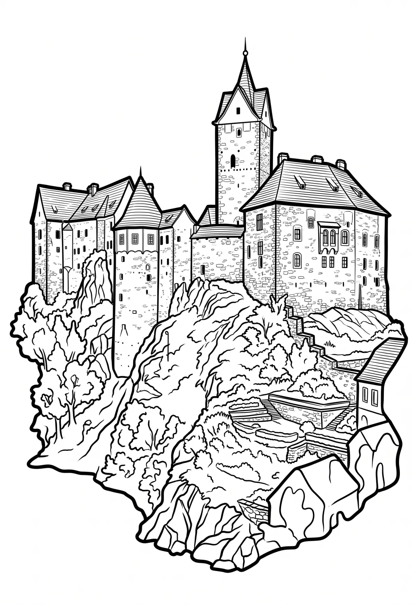

Hrad Loket
Karlovarský kraj · 427 m n. m.

historická památka · #023
Loket (německy Elbogen) je hrad ve stejnojmenném městě v okrese Sokolov. Stojí na skalním ostrohu nad řekou Ohří v chráněné krajinné oblasti Slavkovský les. Hrad je chráněn jako kulturní památka.